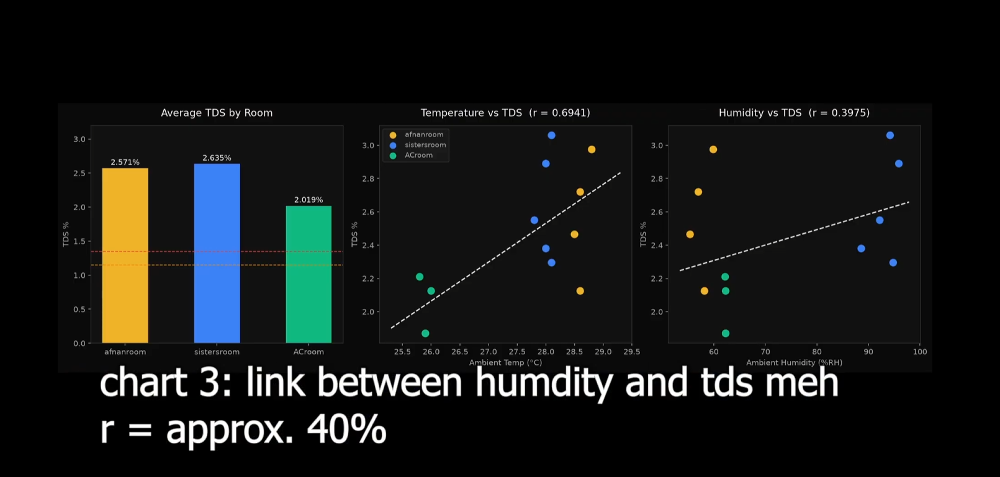

A controlled science experiment testing whether ambient temperature and humidity affect coffee TDS and extraction yield, using a Keurig as a deliberately controlled brewing variable, an ESP32 sensor node, and a full IoT data pipeline from sensor to SQL analysis.
A controlled experiment testing whether the room a coffee maker sits in changes what ends up in the cup. TDS, Total Dissolved Solids, is the percentage of a coffee drink's mass made up of dissolved coffee compounds, and it's the single most predictive objective measure of coffee quality. A Keurig was used deliberately as the brewing device: it removes every human variable, grind, dose, technique, so any change in the cup is purely environmental.
The hypothesis comes from a UC Davis Coffee Center study (Batali, Cotter, Ristenpart, Guinard, 2020), which found that TDS and extraction yield predict taste better than brew temperature alone. If that's true, then anything that shifts TDS, including the ambient conditions the machine sits in, should shift the final cup too.
Short answer: yes.
Full build, experiment, and results, from soldering the ESP32 to reading the final Pearson correlation.
An ESP32 DevKit reads ambient temperature and humidity off a DHT22 sensor and shows live readings on an I2C OLED display. After each brew, pressing Enter in the Serial Monitor triggers the ESP32 to read the sensor and POST a JSON payload over WiFi to a Flask server running locally, which logs the reading into SQLite. TDS is measured separately with a digital refractometer and entered through a small CLI script, which calculates extraction yield and updates the same database row.
Three rooms, five brews each, fifteen total: a warm baseline room, a humidified room, and a cool room under air conditioning. Two outlier brews with anomalously low TDS were excluded from the final analysis as likely measurement error.
| Room | Brews | Avg Temp | Avg Humidity | Avg TDS | Avg Yield |
|---|---|---|---|---|---|
| sistersroom (humid) | 5 | 28.0°C | 93.1% | 2.635% | 39.36% |
| afnanroom (baseline) | 4 | 28.6°C | 57.6% | 2.571% | 35.06% |
| ACroom (cool/dry) | 4 | 25.9°C | 62.3% | 2.019% | 27.27% |

Pearson correlation against TDS came out to r = 0.6941 for ambient temperature and r = 0.3975 for ambient humidity, both excluding the two outlier brews. That was the opposite of the going-in hypothesis, which expected humidity to dominate. Instead, the cool AC room, running 2 to 3°C below the other two, showed the strongest measurable effect on extraction, even with brew temperature held constant by the machine itself.
The TDS gap between the humid room and the AC room was 0.616%, about 12 times the roughly 0.05% difference the UC Davis study found trained tasters can detect. Same machine, same pod, same person, different room, and a perceptible, measurable difference in the cup.
All analysis ran directly against the SQLite database. SQLite has no built-in CORR() function, so Pearson's r was computed manually in raw SQL, alongside GROUP BY aggregation by room and CASE-based SCA Golden Cup classification.
Built a complete IoT pipeline from a bare sensor through to statistical analysis: ESP32 firmware, a REST API, a database schema, a live dashboard, and manual data entry tooling, all feeding a real scientific question with a real answer. The finding itself extends the UC Davis study directly, brew temperature matters less than TDS, but this experiment shows ambient temperature can shift TDS even when the brewer holds its own internal temperature constant.
Biggest lesson: the hypothesis going in was wrong. Humidity was expected to dominate; temperature did. Running the correlation honestly, rather than cherry-picking the result that matched the hypothesis, is what actually made the finding interesting.